SEO cho
Nhà Báo
Hướng dẫn tối ưu hóa công cụ tìm kiếm dành riêng cho sinh viên báo chí — áp dụng thực tế trên Google Sites.
Tổng quan về SEO
SEO là gì?
SEO (Search Engine Optimization — Tối ưu hóa công cụ tìm kiếm) là tập hợp các kỹ thuật giúp bài viết xuất hiện ở vị trí cao hơn trên trang kết quả tìm kiếm (SERP) của Google và các công cụ tương tự — mà không cần trả tiền quảng cáo.
Với nhà báo, SEO không đồng nghĩa với "đánh lừa Google". Mục tiêu thực sự là: viết bài đúng chủ đề độc giả đang tìm, trình bày rõ ràng để máy tìm kiếm hiểu được nội dung, và xây dựng uy tín để Google tin tưởng đề xuất bài lên đầu.
Tại sao SEO quan trọng với báo chí?
- Lượng truy cập tự nhiên: Theo Reuters Institute (2024), hơn 40% lượng truy cập vào các trang tin tức đến từ tìm kiếm — nhiều hơn mạng xã hội trong nhiều thể loại.
- Tuổi thọ bài viết: Bài SEO tốt tiếp tục nhận lượt đọc hàng tháng, hàng năm sau khi đăng — khác với bài mạng xã hội chỉ "sống" vài giờ.
- Độc giả chủ động: Người tìm kiếm đang chủ động muốn đọc về chủ đề đó — tỷ lệ đọc hết bài cao hơn so với nguồn thụ động.
- Cạnh tranh tòa soạn: Hai bài báo cùng chất lượng — bài được tối ưu SEO sẽ nhận gấp nhiều lần lượt đọc hơn bài không được tối ưu.
Google hoạt động thế nào? (Crawl → Index → Rank)
Để hiểu SEO, cần hiểu 3 giai đoạn Google xử lý một trang web:
- ① Crawl (Thu thập): Googlebot — robot tự động của Google — liên tục duyệt qua các trang web theo đường liên kết. Khi bot tìm thấy bài viết mới, nó tải về và đọc nội dung.
- ② Index (Lập chỉ mục): Google phân tích nội dung bài, xác định chủ đề, từ khóa và chất lượng, rồi lưu vào kho dữ liệu khổng lồ (index). Bài chưa được index thì không bao giờ xuất hiện trong kết quả tìm kiếm.
- ③ Rank (Xếp hạng): Khi người dùng tìm kiếm, Google so sánh hàng triệu bài đã được index và xếp hạng dựa trên hơn 200 yếu tố. Bài xuất hiện trang 1 nhận ~90% lượng click; trang 2 trở đi gần như vô hình.
Ba trụ cột SEO
Từ khóa, tiêu đề, mô tả, nội dung bài, hình ảnh, URL. Nhà báo kiểm soát hoàn toàn.
Backlink từ trang khác, chia sẻ mạng xã hội, thương hiệu tòa soạn. Xây dựng lâu dài.
Tốc độ tải, mobile-friendly, HTTPS, cấu trúc dữ liệu. Thường do bộ phận kỹ thuật xử lý.
Khóa học này tập trung vào On-page SEO — phần nhà báo có thể áp dụng ngay khi viết bài, không cần kiến thức lập trình.
Nguyên tắc E-E-A-T — Google đánh giá chất lượng thế nào?
Google sử dụng khung E-E-A-T để đánh giá mức độ tin cậy của nội dung, đặc biệt quan trọng với báo chí:
- Experience (Trải nghiệm): Tác giả có kinh nghiệm thực tế với chủ đề không? Bài phỏng vấn trực tiếp, chứng kiến tại hiện trường được đánh giá cao hơn bài tổng hợp.
- Expertise (Chuyên môn): Tác giả có chuyên môn trong lĩnh vực không? Byline rõ ràng, bio tác giả, trích dẫn chuyên gia.
- Authoritativeness (Thẩm quyền): Trang web/tòa soạn có uy tín không? Được trang khác trích dẫn, có chính sách biên tập rõ ràng.
- Trustworthiness (Độ tin cậy): Thông tin chính xác, có nguồn, không gây hiểu lầm. Đây là yếu tố quan trọng nhất với Google hiện nay.
Sơ đồ tổng quan: 7 bước SEO On-page
Phần còn lại của tài liệu đi sâu vào từng bước dưới đây — theo đúng thứ tự tối ưu khi viết một bài báo:
- Bước 1 — Từ khóa: Xác định từ khóa mục tiêu trước khi bắt đầu viết.
- Bước 2 — Tiêu đề (H1/Title): Đặt tiêu đề chứa từ khóa, đúng độ dài, hấp dẫn.
- Bước 3 — Meta Description: Viết mô tả ngắn gọn hiển thị dưới tiêu đề trên Google.
- Bước 4 — Nội dung bài: Cấu trúc đề mục H2/H3, mật độ từ khóa, độ dài hợp lý.
- Bước 5 — Hình ảnh: Tên file, alt text, dung lượng ảnh ảnh hưởng tốc độ tải.
- Bước 6 — Liên kết: Liên kết nội bộ (internal) và liên kết ngoài (external) uy tín.
- Bước 7 — URL: Đường dẫn ngắn gọn, chứa từ khóa, không dấu.

Từ khóa (Keyword)
Từ khóa là gì?
Là cụm từ độc giả gõ vào Google để tìm thông tin. Nhiệm vụ của nhà báo SEO là đoán đúng độc giả sẽ gõ gì, rồi dùng đúng từ đó trong bài.
3 loại từ khóa cần biết
- Từ khóa chính — chủ đề cốt lõi. Đặt trong tiêu đề, đoạn mở, URL. Ví dụ: hội nghị ASEAN 2025
- Từ khóa phụ (LSI) — từ liên quan xung quanh chủ đề. Rải tự nhiên trong thân bài. Ví dụ: kết quả, tuyên bố, đàm phán
- Từ khóa đuôi dài — cụm từ dài, cụ thể hơn, ít cạnh tranh. Phù hợp báo địa phương. Ví dụ: lũ lụt Quảng Nam tháng 10 2025
Quy trình nghiên cứu từ khóa (không cần công cụ trả phí)
- Gõ chủ đề vào Google → xem gợi ý tự động xuất hiện bên dưới
- Cuộn xuống cuối → đọc "Tìm kiếm liên quan" và "Mọi người cũng hỏi"
- Dùng Google Trends so sánh 2 từ khóa để chọn cái được tìm nhiều hơn
- Không dùng từ khóa bạn nghĩ là đúng mà không kiểm chứng
Hướng dẫn sử dụng Google Trends
Google Trends là công cụ miễn phí của Google cho thấy mức độ phổ biến của một từ khóa theo thời gian và khu vực địa lý. Với nhà báo, đây là cách nhanh nhất để biết chủ đề nào đang được công chúng quan tâm — trước khi ngồi viết.
① Truy cập và cài đặt cơ bản
- Vào trends.google.com/trending?geo=VN — trang "Đang thịnh hành" tại Việt Nam. Đây là bảng radar tin tức của bạn mỗi sáng.
- Chuyển sang tab "Khám phá" để tra cứu từ khóa cụ thể.
- Cài đặt bộ lọc: Việt Nam (thay vì Toàn thế giới), khoảng thời gian 30 ngày qua hoặc 12 tháng qua tuỳ mục đích.
- Chọn danh mục "Tất cả danh mục" hoặc thu hẹp về "Tin tức và chính trị" nếu làm tin thời sự.
② So sánh hai từ khóa cùng chủ đề
Đây là tính năng mạnh nhất của Google Trends với nhà báo. Thay vì đoán, hãy để dữ liệu quyết định:
- Nhập từ khóa đầu tiên vào ô tìm kiếm, ví dụ: "lũ lụt miền Trung".
- Nhấn "+ So sánh" → nhập từ khóa thứ hai: "ngập lụt miền Trung".
- Đọc biểu đồ: đường nào cao hơn = từ đó được tìm nhiều hơn → dùng từ đó làm từ khóa chính.
- Xem "Khu vực quan tâm" bên dưới — biết tỉnh nào đang tìm nhiều nhất, hữu ích cho báo địa phương.
③ Đọc phần "Truy vấn liên quan"
- Đang tăng (Rising): Những từ khóa liên quan có lượng tìm kiếm tăng đột biến — đây là tín hiệu chủ đề mới nổi, cơ hội viết bài trước đám đông.
- Hàng đầu (Top): Từ khóa liên quan phổ biến nhất theo thời gian — dùng làm từ khóa phụ (LSI) để rải trong bài.
④ Ứng dụng thực tế cho nhà báo
- Chọn từ khóa đúng trước khi viết
- Phát hiện chủ đề đang nóng để đưa tin nhanh
- Kiểm tra tính thời sự của chủ đề phóng sự dài kỳ
- So sánh mức quan tâm giữa hai sự kiện cùng thời điểm
- Tìm thời điểm trong năm mà chủ đề được tìm nhiều nhất
- Biết số lượt tìm kiếm tuyệt đối (chỉ có chỉ số tương đối 0–100)
- Nghiên cứu từ khóa rất ít người tìm (biểu đồ sẽ trắng)
- Thay thế phán đoán biên tập — dữ liệu bổ trợ, không quyết định
Bài tập Nghiên cứu từ khóa với Google Trends
Mở trends.google.com trong tab mới và thực hiện theo từng bước:
- Chọn một sự kiện thời sự đang diễn ra (ví dụ: một phiên họp Quốc hội, đợt thiên tai, sự kiện thể thao…). Ghi lại 3 cách gọi tên khác nhau mà độc giả có thể dùng để tìm sự kiện đó trên Google.
- So sánh 3 từ khóa trên Google Trends: vào "Khám phá" → nhập từ khóa đầu → "+ So sánh" thêm 2 từ còn lại. Đặt bộ lọc: Việt Nam — 30 ngày qua. Ghi lại: từ khóa nào có chỉ số cao nhất?
- Đọc "Truy vấn liên quan" của từ khóa thắng: liệt kê 3 truy vấn trong mục "Đang tăng". Đây sẽ là gợi ý từ khóa phụ hoặc ý tưởng bài viết liên quan.
- Kiểm tra tính mùa vụ: chuyển bộ lọc thời gian sang "5 năm" với từ khóa thắng. Chủ đề này có tăng cao theo mùa không? Rút ra nhận xét về thời điểm tốt nhất để đăng bài.
- Viết câu kết luận (3–5 câu): từ khóa bạn sẽ chọn làm từ khóa chính cho bài báo là gì, lý do dựa trên dữ liệu Google Trends, và bạn sẽ dùng những từ khóa phụ nào từ mục "Truy vấn liên quan".
Bài tập Tính mật độ từ khóa
Mật độ lý tưởng: 1–2%. Nhập số liệu bài của bạn:
Tiêu đề bài (Title / H1)
Nguyên tắc vàng
- Đặt từ khóa chính ở đầu tiêu đề — Google đọc từ trái sang phải
- Giữ 50–60 ký tự — dài hơn sẽ bị cắt và thêm "…" trên Google
- Mỗi bài chỉ có 1 thẻ H1 duy nhất
- Không viết hoa toàn bộ, không dùng dấu chấm than — trông như spam
- Không lặp từ khóa nhiều lần trong cùng một tiêu đề
4 công thức tiêu đề theo thể loại
Tiêu đề trông như thế nào trên Google?
↑ Tiêu đề thứ 2 bị cắt vì quá dài (82 ký tự). Ý nghĩa bị mất.
Bài tập Kiểm tra độ dài tiêu đề
Mô tả (Meta Description)
Meta description là gì?
Đoạn văn ngắn hiển thị bên dưới tiêu đề trên Google Search. Không trực tiếp tăng thứ hạng, nhưng tăng tỉ lệ click — điều này gián tiếp giúp SEO.
Nguyên tắc viết meta description
- 150–160 ký tự — đủ để hiển thị trên Google mà không bị cắt
- Chứa từ khóa chính — Google sẽ in đậm từ khóa trùng với từ người dùng tìm
- Viết như "lời mời đọc bài" — trả lời câu hỏi "bài này có gì cho tôi?"
- Tóm tắt thông tin quan trọng nhất — ai, làm gì, ở đâu, khi nào
- Không copy nguyên văn từ bài — cần viết riêng, ngắn gọn hơn
- Không để Google Sites tự tạo — thường lấy 160 ký tự đầu bài, không tối ưu
Cách thêm meta description trong Google Sites
Google Sites chưa có ô riêng cho meta description. Giải pháp thực tế: đặt đoạn tóm tắt ngắn gọn ở đầu bài, ngay sau tiêu đề. Google thường lấy đoạn này để hiển thị.
Bài tập Viết meta description
Nội dung bài viết
Cấu trúc heading — "mục lục cho Google"
Ví dụ bài chuẩn cấu trúc
Độ dài bài theo thể loại
- Tin tức thời sự: 300–500 từ — ưu tiên tốc độ đăng bài
- Phóng sự, phân tích: 700–1200 từ — đủ chỗ đặt từ khóa phụ tự nhiên
- Điều tra, chuyên đề: 1500+ từ — Google ưu tiên cho truy vấn phức tạp
- Tránh bài dưới 200 từ — Google coi là "thin content", ít được xếp hạng
Bài tập Phân tích bài viết của bạn
Hình ảnh (Image SEO)
Tại sao Google quan tâm đến hình ảnh?
Google không "nhìn" được ảnh như người — nó đọc tên file và alt text để hiểu hình ảnh về chủ đề gì. Tối ưu hình ảnh giúp xuất hiện trong Google Images, tăng lưu lượng truy cập.
Hai điều quan trọng nhất
IMG_20251015_085432.jpgphoto (3).jpegDSC00142.png
lu-lut-mien-trung-2025.jpgso-tan-quang-nam.jpgho-nghi-asean-ha-noi.jpg
- Tên file: chữ thường, dấu gạch ngang, có từ khóa, không dấu tiếng Việt
- Alt text: mô tả ngắn nội dung ảnh, chứa từ khóa tự nhiên. Trong Google Sites: nhấp chuột phải vào ảnh → "Văn bản thay thế"
- Kích thước file: tối ưu dưới 200KB — ảnh nặng làm trang tải chậm, Google phạt tốc độ
- Không để alt text trống — Google bỏ qua ảnh không có alt text
Bài tập Viết alt text cho ảnh
Mô tả: ảnh chụp người dân đang sơ tán bằng thuyền trên đường phố ngập lụt tại Quảng Nam, tháng 10/2025.
Liên kết (Links)
2 loại liên kết quan trọng
- Liên kết nội bộ (Internal links) — dẫn đến bài khác trong cùng Google Sites của bạn. Giúp Google khám phá thêm nội dung, giữ người đọc ở lại lâu hơn.
- Liên kết ngoài (External links) — dẫn đến nguồn tin uy tín (báo lớn, cơ quan nhà nước, nghiên cứu khoa học). Tăng độ tin cậy của bài cho Google.
Nguyên tắc đặt liên kết
- Mỗi bài nên có ít nhất 1 liên kết nội bộ đến bài liên quan
- Anchor text (chữ hiển thị của link) phải mô tả đúng nội dung trang đích
- Dẫn nguồn từ báo có tên tuổi: vnexpress.net, tuoitre.vn, nhandan.vn, vnpt.gov.vn...
- Không dùng anchor text chung chung như "nhấp vào đây", "xem thêm", "tại đây"
- Không link đến trang không liên quan hoặc trang spam
Bài tập Lên kế hoạch liên kết
- Lấy bài báo bạn đang viết trên Google Sites
- Tìm 1 bài cũ trong cùng site có chủ đề liên quan → đặt liên kết nội bộ
- Tìm 1 nguồn báo uy tín xác nhận thông tin quan trọng nhất trong bài → đặt liên kết ngoài
- Viết anchor text mô tả rõ nội dung, không dùng "tại đây"
Đường dẫn (URL)
URL trong Google Sites hoạt động thế nào?
Google Sites tự tạo URL từ tên trang. Đặt tên trang = đặt URL. Vì vậy cần đặt tên trang ngay từ đầu, thay đổi sau sẽ làm hỏng link đã chia sẻ.
Ví dụ URL tốt và URL cần tránh
Quy tắc đặt URL
- Chữ thường, cách nhau bằng dấu gạch ngang ( - )
- Chứa từ khóa chính — đặt từ khóa quan trọng lên đầu
- 3–5 từ là lý tưởng, dưới 60 ký tự
- Không dấu tiếng Việt — nên chuyển sang không dấu để an toàn
- Không ký tự đặc biệt: ! ? # & % ( ) = dấu cách
- Không để Google Sites tự đặt tên mặc định (
page,trang-moi)
Bài tập Đặt URL cho bài báo
Công thức: Tiêu đề rút gọn → bỏ dấu → thay khoảng trắng bằng gạch ngang
Đo lường & Theo dõi SEO
Tại sao phải đo lường?
Tối ưu SEO mà không theo dõi kết quả giống như viết bài mà không biết ai đọc. Đo lường cho bạn biết bài nào đang được tìm thấy, từ khóa nào đang hoạt động, và quan trọng hơn — bài nào cần được viết lại.
Bộ công cụ đo lường SEO miễn phí
-
Google Search Console (GSC) — công cụ quan trọng nhất, hoàn toàn miễn phí.
Cho biết bài xuất hiện bao nhiêu lần trên Google, từ khóa nào dẫn người dùng đến bài, vị trí xếp hạng trung bình và tỉ lệ click. Kết nối trực tiếp với Google Sites. -
Google Analytics 4 (GA4) — phân tích hành vi người đọc sau khi vào trang.
Cho biết bao nhiêu người đọc đến từ tìm kiếm tự nhiên, họ đọc bao lâu, trang nào được đọc nhiều nhất. Tích hợp vào Google Sites qua mã đo lường. -
Google PageSpeed Insights — kiểm tra tốc độ tải trang.
Tốc độ tải trang là yếu tố xếp hạng của Google. Điểm dưới 50 (đỏ) cần cải thiện; trên 90 (xanh) là tốt. Dán URL bài vào để kiểm tra. -
Google Trends — đã học ở Bước 1, cũng dùng để theo dõi xu hướng sau khi đăng bài.
Xem chủ đề bài còn đang "nóng" không; nếu đang tăng trở lại, đây là lúc cập nhật và chia sẻ lại bài.
Các chỉ số GSC cần biết
Kết nối Google Sites với Search Console — từng bước
Google Sites miễn phí không cho phép chỉnh sửa thẻ <head>, nên không dùng được phương thức xác minh bằng thẻ HTML. Cách đúng là xác minh qua Google Analytics.
Bước 1 — Gắn Google Analytics vào Google Sites
-
Vào analytics.google.com → tạo tài khoản và thuộc tính GA4 mới → sao chép Mã đo lường (dạng
G-XXXXXXXXXX). -
Mở Google Sites → nhấn biểu tượng bánh răng ⚙ Cài đặt → chọn "Analytics" → dán mã
G-XXXXXXXXXXvào → nhấn OK. - Nhấn Xuất bản lại trang để mã có hiệu lực.
Bước 2 — Thêm tài sản trong Search Console
- Vào search.google.com/search-console → nhấn "Thêm tài sản".
-
Chọn loại "Tiền tố URL" → dán URL Google Sites (dạng
sites.google.com/view/ten-site) → nhấn Tiếp tục. - Ở màn hình xác minh, mở rộng mục "Các phương thức khác" → chọn "Google Analytics" → nhấn "Xác minh".
- Nếu GA4 đã được gắn đúng ở Bước 1, xác minh sẽ thành công ngay — trạng thái chuyển sang xanh lá.
Bước 3 — Gửi Sitemap
-
Trong Search Console → menu trái → "Sơ đồ trang web" → nhập
sitemap.xmlvào ô URL → Gửi. Google Sites tự tạo sitemap tạisites.google.com/view/ten-site/sitemap.xml.
Đọc báo cáo Performance trong GSC
- Tab "Truy vấn": Từ khóa nào đang đưa người đọc đến trang bạn. Sắp xếp theo Impressions để thấy tiềm năng — từ khóa nhiều impression nhưng CTR thấp nghĩa là tiêu đề/mô tả cần viết lại.
- Tab "Trang": Bài nào đang được tìm thấy nhiều nhất. Bài có impression cao nhưng vị trí 11–20 là ứng cử viên để tối ưu thêm — chỉ cần lên trang 1 là traffic sẽ tăng vọt.
- "Kiểm tra URL": Dán URL một bài cụ thể để xem Google đã index chưa, index ngày nào, bản mobile hiển thị thế nào.
- Không so sánh số tuyệt đối giữa các trang có độ tuổi khác nhau — một bài 6 tháng tuổi tất nhiên có nhiều impression hơn bài mới đăng tuần trước.
Bài tập Kết nối Google Sites với Search Console
Thực hiện ngay với trang Google Sites bạn đã tạo trong môn học:
- Tạo tài khoản GA4 tại analytics.google.com → sao chép mã đo lường
G-XXXXXXXXXX. - Trong Google Sites → ⚙ Cài đặt → Analytics → dán mã GA4 → OK → Xuất bản lại.
- Vào search.google.com/search-console → "Thêm tài sản" → Tiền tố URL → dán URL trang.
- Chọn phương thức xác minh "Google Analytics" → nhấn Xác minh → kiểm tra trạng thái xanh.
- Vào "Sơ đồ trang web" → gửi
sitemap.xml. - Dùng "Kiểm tra URL" với một bài đã đăng: đã index chưa? Nếu chưa → nhấn "Yêu cầu lập chỉ mục".
- Sau 3–7 ngày: Báo cáo Performance → tab "Truy vấn" → ghi lại 3 từ khóa đang dẫn người đọc đến trang.
Quiz kiểm tra
1. Mật độ từ khóa lý tưởng trong một bài báo là bao nhiêu?
2. Tiêu đề bài báo nên dài tối đa bao nhiêu ký tự?
3. Trong Google Sites, heading H2 được tạo bằng cách nào?
4. Anchor text nào dưới đây là chuẩn SEO?
5. URL nào dưới đây chuẩn SEO nhất?
8 điểm kiểm tra trước khi đăng
Tick vào từng ô khi bạn đã hoàn thành. Đăng bài khi đạt đủ 8/8.